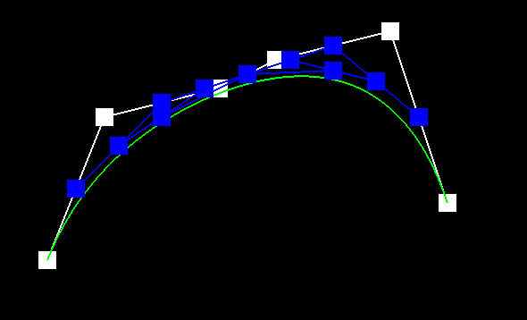
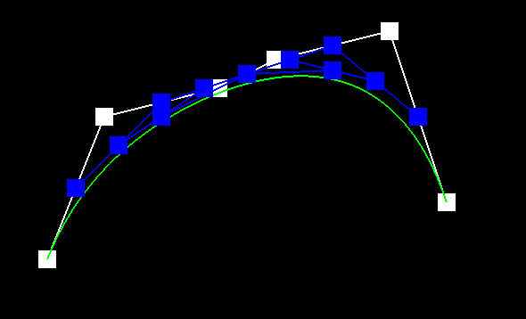
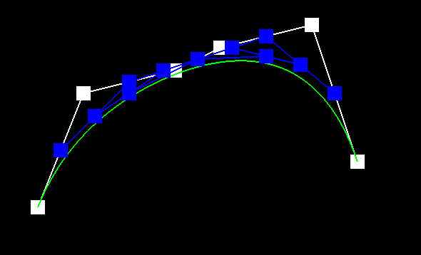

2:


 


3:

1:de Casteljau's algorithm will each time, linear interpolate two nearby points with parameter t until we get n-1 new points, and repeat the process until we have only 1 point left.
In my implementation, I just iterate over all the nearby points, use (1-t)*p1 + t * p2 to get the new point. Repeat the process until I get n - 1 points.
2:

3:
1:For Bezier surfaces, we first use de Casteljau's algorithm with t=u on each row of the control points(n*n in total) to get n Bezier Curves,
then, use de Casteljau's algorithm with t=v on n control points from these n Bezier Curves to get the surface point (u,v).
My implementation basically follow the procedure mentioned above.
2:
1:I first get all the nearby points and store them in a vector array; then I iterate over the array two adjacent points a time, calculate two
vectors v1 and v2, and vv = cross product of v1 and v2,then I add vv to v, which is the running sum of all the vectors. In the end, I just
call v.normalize() and return the v.
2:
1: I first define pointers to all the edges, vertices, halfedges and faces; then I update the pointers for each of them.
2:
N/A